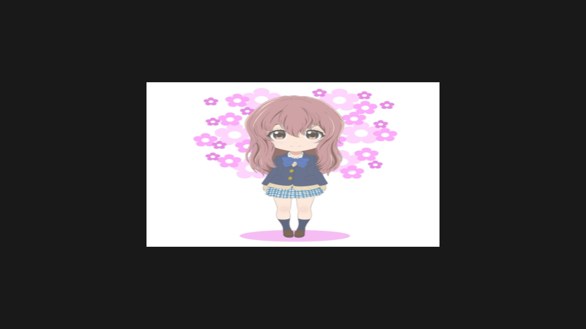

Textured Quad
In this tutorial, you'll learn how to render a textured quad using Zenith.NET. We'll load an image, create a texture and sampler, and bind them to the shader using resource layouts.
Overview
We'll create a TexturedQuadRenderer class that:
- Uses an index buffer to draw a quad with 4 vertices
- Loads an image and uploads it to a GPU texture
- Creates a sampler for texture filtering
- Binds texture and sampler using
ResourceLayoutandResourceTable
Project Setup
Required Package
Add the ImageSharp extension for loading images:
dotnet add package Zenith.NET.Extensions.ImageSharp
Then add the global using to Usings.cs:
global using Zenith.NET.Extensions.ImageSharp;
Assets Configuration
Update your .csproj to copy assets to the output directory:
<ItemGroup>
<None Update="Assets\**\*">
<CopyToOutputDirectory>PreserveNewest</CopyToOutputDirectory>
</None>
</ItemGroup>
Sample Image
This tutorial uses the following sample image. Right-click to save it to your project's Assets folder:

Your project structure should now look like this:
ZenithTutorials/
├── Assets/
│ └── shoko.png # Save the image above as shoko.png
└── Renderers/
└── TexturedQuadRenderer.cs
The Renderer Class
Create a new file Renderers/TexturedQuadRenderer.cs:
namespace ZenithTutorials.Renderers;
internal unsafe class TexturedQuadRenderer : IRenderer
{
private const string ShaderSource = """
struct VSInput
{
float3 Position : POSITION0;
float2 TexCoord : TEXCOORD0;
};
struct PSInput
{
float4 Position : SV_POSITION;
float2 TexCoord : TEXCOORD0;
};
Texture2D shaderTexture;
SamplerState samplerState;
PSInput VSMain(VSInput input)
{
PSInput output;
output.Position = float4(input.Position, 1.0);
output.TexCoord = input.TexCoord;
return output;
}
float4 PSMain(PSInput input) : SV_TARGET
{
return shaderTexture.Sample(samplerState, input.TexCoord);
}
""";
private readonly Buffer vertexBuffer;
private readonly Buffer indexBuffer;
private readonly Texture texture;
private readonly Sampler sampler;
private readonly ResourceLayout resourceLayout;
private readonly ResourceTable resourceTable;
private readonly GraphicsPipeline pipeline;
public TexturedQuadRenderer()
{
// UV origin (0,0) is top-left, (1,1) is bottom-right
Vertex[] vertices =
[
new(new(-0.5f, 0.5f, 0.0f), new(0.0f, 0.0f)),
new(new( 0.5f, 0.5f, 0.0f), new(1.0f, 0.0f)),
new(new( 0.5f, -0.5f, 0.0f), new(1.0f, 1.0f)),
new(new(-0.5f, -0.5f, 0.0f), new(0.0f, 1.0f))
];
uint[] indices = [0, 1, 2, 0, 2, 3];
vertexBuffer = App.Context.CreateBuffer(new()
{
SizeInBytes = (uint)(sizeof(Vertex) * vertices.Length),
StrideInBytes = (uint)sizeof(Vertex),
Flags = BufferUsageFlags.Vertex | BufferUsageFlags.MapWrite
});
vertexBuffer.Upload(vertices, 0);
indexBuffer = App.Context.CreateBuffer(new()
{
SizeInBytes = (uint)(sizeof(uint) * indices.Length),
StrideInBytes = sizeof(uint),
Flags = BufferUsageFlags.Index | BufferUsageFlags.MapWrite
});
indexBuffer.Upload(indices, 0);
texture = App.Context.LoadTextureFromFile(Path.Combine(AppContext.BaseDirectory, "Assets", "shoko.png"), generateMipMaps: true);
sampler = App.Context.CreateSampler(new()
{
U = AddressMode.Clamp,
V = AddressMode.Clamp,
W = AddressMode.Clamp,
Filter = Filter.MinLinearMagLinearMipLinear,
MaxLod = uint.MaxValue
});
resourceLayout = App.Context.CreateResourceLayout(new()
{
Bindings = BindingHelper.Bindings
(
new() { Type = ResourceType.Texture, Count = 1, StageFlags = ShaderStageFlags.Pixel },
new() { Type = ResourceType.Sampler, Count = 1, StageFlags = ShaderStageFlags.Pixel }
)
});
resourceTable = App.Context.CreateResourceTable(new()
{
Layout = resourceLayout,
Resources = [texture, sampler]
});
InputLayout inputLayout = new();
inputLayout.Add(new() { Format = ElementFormat.Float3, Semantic = ElementSemantic.Position });
inputLayout.Add(new() { Format = ElementFormat.Float2, Semantic = ElementSemantic.TexCoord });
using Shader vertexShader = App.Context.LoadShaderFromSource(ShaderSource, "VSMain", ShaderStageFlags.Vertex);
using Shader pixelShader = App.Context.LoadShaderFromSource(ShaderSource, "PSMain", ShaderStageFlags.Pixel);
pipeline = App.Context.CreateGraphicsPipeline(new()
{
RenderStates = new()
{
RasterizerState = RasterizerStates.CullNone,
DepthStencilState = DepthStencilStates.Default,
BlendState = BlendStates.Opaque
},
Vertex = vertexShader,
Pixel = pixelShader,
ResourceLayout = resourceLayout,
InputLayouts = [inputLayout],
PrimitiveTopology = PrimitiveTopology.TriangleList,
Output = App.SwapChain.FrameBuffer.Output
});
}
public void Update(double deltaTime)
{
}
public void Render()
{
CommandBuffer commandBuffer = App.Context.Graphics.CommandBuffer();
commandBuffer.BeginRenderPass(App.SwapChain.FrameBuffer, new()
{
ColorValues = [new(0.1f, 0.1f, 0.1f, 1.0f)],
Depth = 1.0f,
Stencil = 0,
Flags = ClearFlags.All
}, resourceTable);
commandBuffer.SetPipeline(pipeline);
commandBuffer.SetResourceTable(resourceTable);
commandBuffer.SetVertexBuffer(vertexBuffer, 0, 0);
commandBuffer.SetIndexBuffer(indexBuffer, 0, IndexFormat.UInt32);
commandBuffer.DrawIndexed(6, 1, 0, 0, 0);
commandBuffer.EndRenderPass();
commandBuffer.Submit(waitForCompletion: true);
}
public void Resize(uint width, uint height)
{
}
public void Dispose()
{
pipeline.Dispose();
resourceTable.Dispose();
resourceLayout.Dispose();
sampler.Dispose();
texture.Dispose();
indexBuffer.Dispose();
vertexBuffer.Dispose();
}
}
/// <summary>
/// Vertex structure with position and texture coordinates.
/// </summary>
[StructLayout(LayoutKind.Sequential)]
file struct Vertex(Vector3 position, Vector2 texCoord)
{
public Vector3 Position = position;
public Vector2 TexCoord = texCoord;
}
Running the Tutorial
Update your Program.cs to run the TexturedQuadRenderer:
using ZenithTutorials;
using ZenithTutorials.Renderers;
App.Run<TexturedQuadRenderer>();
App.Cleanup();
Run the application:
dotnet run
Result

Code Breakdown
Vertex Structure
[StructLayout(LayoutKind.Sequential)]
file struct Vertex(Vector3 position, Vector2 texCoord)
{
public Vector3 Position = position;
public Vector2 TexCoord = texCoord;
}
Unlike the triangle tutorial, we now use Vector2 TexCoord instead of color. Texture coordinates (UVs) range from (0,0) at the top-left to (1,1) at the bottom-right.
Index Buffer
uint[] indices = [0, 1, 2, 0, 2, 3];
indexBuffer = App.Context.CreateBuffer(new()
{
SizeInBytes = (uint)(sizeof(uint) * indices.Length),
StrideInBytes = sizeof(uint),
Flags = BufferUsageFlags.Index | BufferUsageFlags.MapWrite
});
A quad requires 6 indices (2 triangles × 3 vertices). Using an index buffer reduces vertex data from 6 to 4 vertices by reusing shared vertices.
Loading Textures
texture = App.Context.LoadTextureFromFile(Path.Combine(AppContext.BaseDirectory, "Assets", "shoko.png"), generateMipMaps: true);
The Zenith.NET.Extensions.ImageSharp extension provides convenient methods to load images. Setting generateMipMaps: true creates smaller versions of the texture for better quality at different distances.
Sampler
sampler = App.Context.CreateSampler(new()
{
U = AddressMode.Clamp,
V = AddressMode.Clamp,
W = AddressMode.Clamp,
Filter = Filter.MinLinearMagLinearMipLinear,
MaxLod = uint.MaxValue
});
Samplers control how textures are read:
| Property | Description |
|---|---|
U/V/W |
How to handle coordinates outside 0-1 range |
Filter |
Interpolation method (linear = smooth, point = pixelated) |
MaxLod |
Maximum mipmap level to use |
Resource Binding
// 1. Define the layout using BindingHelper for cross-platform compatibility
resourceLayout = App.Context.CreateResourceLayout(new()
{
Bindings = BindingHelper.Bindings
(
new() { Type = ResourceType.Texture, Count = 1, StageFlags = ShaderStageFlags.Pixel },
new() { Type = ResourceType.Sampler, Count = 1, StageFlags = ShaderStageFlags.Pixel }
)
});
// 2. Create the table (bind actual resources)
resourceTable = App.Context.CreateResourceTable(new()
{
Layout = resourceLayout,
Resources = [texture, sampler]
});
// 3. Bind during rendering
commandBuffer.SetResourceTable(resourceTable);
This three-step process connects your GPU resources to shader variables:
- ResourceLayout - Describes the structure (types and binding slots)
- ResourceTable - Binds actual resources to the layout
- SetResourceTable - Activates the binding during rendering
The BindingHelper.Bindings() method (defined in Prerequisites) automatically assigns the correct Index values based on the current backend, so you don't need to specify them manually.
Resource Preprocessing
When beginning a render pass, you can pass resource tables to the preprocessResourceTables parameter:
commandBuffer.BeginRenderPass(App.SwapChain.FrameBuffer, new()
{
ColorValues = [new(0.1f, 0.1f, 0.1f, 1.0f)],
Depth = 1.0f,
Stencil = 0,
Flags = ClearFlags.All
}, resourceTable);
This allows Zenith.NET to optimize the resources in the table for shader access before the render pass begins, eliminating the need for manual resource management.
Shader Texture Sampling
Texture2D shaderTexture;
SamplerState samplerState;
float4 PSMain(PSInput input) : SV_TARGET
{
return shaderTexture.Sample(samplerState, input.TexCoord);
}
In Slang, resources are declared as global variables after the struct definitions, without explicit register bindings. The binding order is determined by declaration order and matches the order in ResourceLayout.Bindings. The pixel shader samples the texture at the interpolated UV coordinates.
Next Steps
Now that you understand texturing and resource binding, the next tutorial covers 3D rendering:
- Spinning Cube - Render a 3D cube with index buffers and MVP transformation matrices
Source Code
Tip
View the complete source code on GitHub: TexturedQuadRenderer.cs